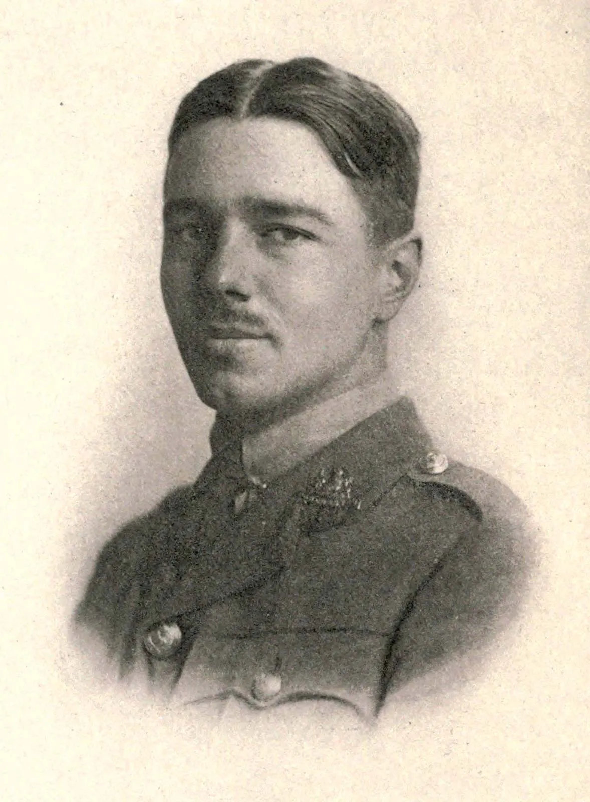
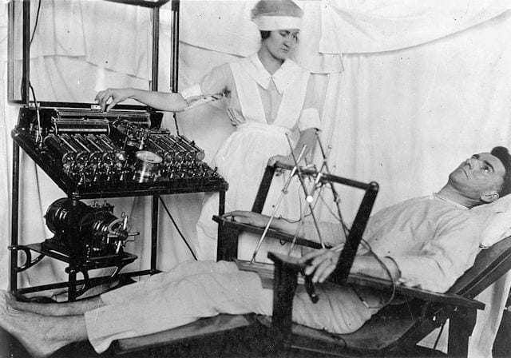
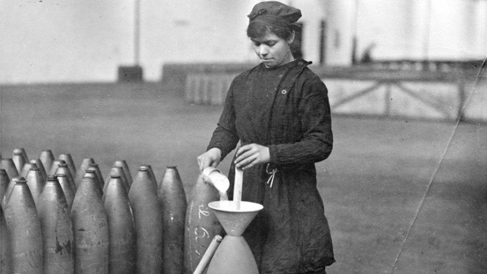
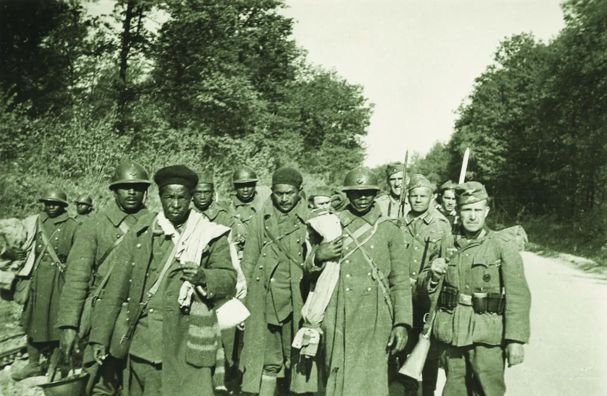
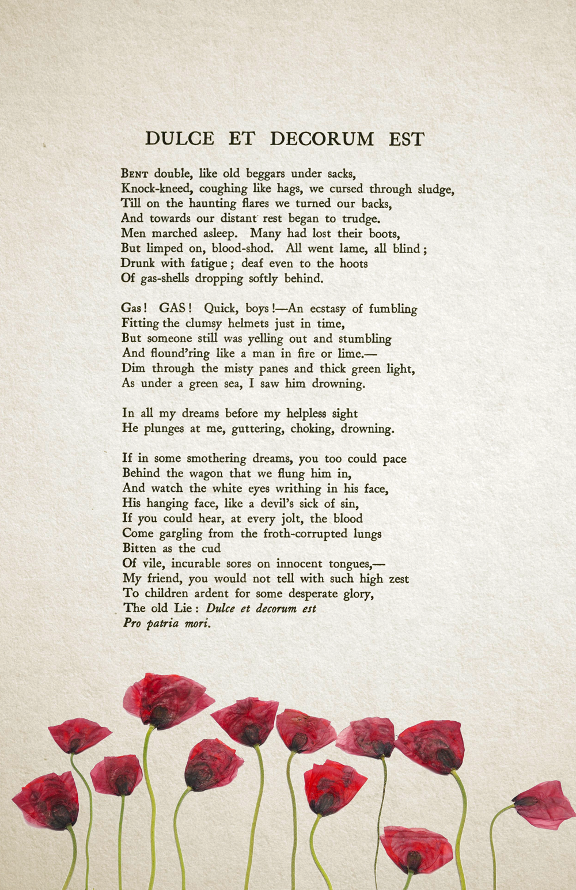

World History — Semester 1 — Lesson 09 — Standard 10.5
The World WWI Left Behind
Essential Question
How does a generation make sense of a war that destroyed everything they believed in?
THE AFTERMATH OF WWI — 1918 TO 1933
1918
WWI ends; 20 million dead, 21 million wounded, an entire generation's faith in civilization shattered.
1918–22
Writers, artists, and veterans who survived attempt to make sense of what they experienced — producing a wave of literature, art, and cultural change.
1920s
Shell shock forces medicine to confront psychological wounds; women who served return home; colonial soldiers return to empires that offer nothing.
1929
The Great Depression hits a world already weakened by war debt, wounded institutions, and shattered faith in liberal democracy.
1933
Hitler takes power in Germany — filling the vacuum left by a generation that stopped believing in the old institutions.
In the autumn of 1917, a young British officer named Wilfred Owen was carried out of the trenches suffering from what his commanders called "shell shock." He spent several months recovering in a hospital in Edinburgh, where a doctor named W.H.R. Rivers helped him begin to process what he had seen. Owen went back to the front in 1918, was killed one week before the armistice, and was twenty-five years old when he died. The poems he wrote in those months — including a description of watching a man die in a gas attack that ends with the line "the old lie: dulce et decorum est pro patria mori" — became some of the most-read poetry in the English language. He did not live to see it. He did not live to see anything that came after. Neither did ten million other soldiers. The ones who survived had to figure out what to do with a world that would never look the same again.
In autumn 1917, a young British officer named Wilfred Owen was carried out of the trenches suffering from what doctors called "shell shock." He recovered in a hospital in Edinburgh, wrote some of the most powerful anti-war poetry in history, went back to the front, and was killed one week before the war ended. He was twenty-five years old. Ten million soldiers died in WWI. The ones who survived had to figure out how to live in a world that WWI had permanently broken.
CHAPTER ONE
THE LOST GENERATION

Wilfred Owen, WWI poet and British officer, circa 1916. He was killed in action on November 4, 1918 — one week before the armistice. His poems were published posthumously. Wikimedia Commons.
The writer Gertrude Stein is credited with coining the term Lost GenerationThe generation of writers, artists, and intellectuals who came of age during WWI and whose beliefs were shattered by the experience of industrial warfare. to describe the young men and women who had survived WWI and could no longer go back to believing what they had believed before. The war had been sold to them with the language of honor, glory, heroism, and the defense of civilization. What they encountered instead was industrial slaughter — men killed by gas attacks, artillery barrages, and machine guns in quantities that no previous war had come close to matching. The tools of modern civilization — the chemistry that made dye also made poison gas; the factories that made cars also made artillery shells — had been turned to the most efficient killing in human history. Something had broken in how this generation understood the world.
The writer Gertrude Stein coined the term "Lost Generation" for the young men and women who survived WWI and could no longer believe what they had believed before it. The war had been sold to them as honorable, glorious, and necessary. What they found was industrial slaughter — men killed by gas attacks, machine guns, and artillery in numbers that no previous war had come close to. The modern civilization they had been told to fight for had built the most efficient killing machines in history. Something had broken.
The disillusionmentThe feeling of having lost one's beliefs, ideals, or faith in something that seemed important — in this case, faith in war, government, and the promise of civilization. showed up everywhere in the decade after the war. Ernest Hemingway, who had driven an ambulance on the Italian front and been seriously wounded, developed a prose style so stripped of sentiment and ornamentation that it amounted to a new way of writing: short sentences, no grand abstractions, no beautiful lies. His characters survived things they could not fully explain and carried wounds they could not fully express. Wilfred Owen's poetry described the physical reality of the trenches in clinical, unsparing detail specifically to destroy the romantic language that had sent men to die there. Both writers were making the same argument: the old language had been used to lie to people, and a new language was needed.
The disillusionment showed up everywhere after the war. Ernest Hemingway, who had driven an ambulance at the Italian front, developed a writing style of short, stripped-down sentences with no grand heroic language. His characters survived things they could barely explain. Wilfred Owen described the trenches in cold, precise detail specifically to destroy the romantic language that had been used to send men to die there. Both writers were making the same argument: the old language had been used to lie to people. A new language was needed.
DadaismAn artistic movement that responded to WWI by deliberately making art that was nonsensical, absurd, or anti-rational — as a protest against a civilization that had produced the war. and modernismA broad movement in art, literature, and architecture that broke with traditional forms after WWI, arguing that the old ways of representing the world were no longer adequate. went further. Artists like Marcel Duchamp placed a urinal in an art gallery and called it sculpture. Poets broke apart traditional meter and rhyme. Architects abandoned ornament. The argument behind all of it was the same: the traditional forms of Western civilization — its art, its literature, its architecture, its institutions — had been complicit in producing a war that killed twenty million people. Those forms could no longer be trusted to tell the truth about the world. Something entirely new had to be built.
Dadaism and modernism went even further. Artists deliberately made nonsensical work to protest a civilization that had produced the war. Poets broke traditional forms. Architects abandoned decoration. The argument was the same: the traditional art and culture of Western civilization had been part of building a world that killed twenty million people. Those traditions could no longer be trusted. Something entirely new had to replace them.
DID YOU KNOW
Wilfred Owen's most famous poem, "Dulce et Decorum Est," ends with a phrase from the Roman poet Horace: "dulce et decorum est pro patria mori" — "it is sweet and honorable to die for one's country." Owen calls it "the old lie." The Latin phrase had been used by British schools, churches, and government for centuries to inspire young men to see dying in war as noble. Owen had watched a man die in a gas attack at close range. He used the phrase precisely because it was so familiar — and he wanted to destroy it permanently. He was twenty-four years old when he wrote it.
CHAPTER TWO
SHELL SHOCK AND THE BIRTH OF MODERN PSYCHOLOGY

WWI veterans being treated for shell shock in a military hospital. Doctors had no framework for understanding psychological wounds before the war. By the end of it, the field of modern psychology had been permanently changed. Wikimedia Commons.
Shell shockA term used during WWI for what we now call PTSD (Post-Traumatic Stress Disorder) — psychological trauma caused by exposure to combat, death, and extreme violence. — the term soldiers used for what they were experiencing — was a psychological wound unlike anything the medical establishment had prepared for. Soldiers were returning from the front unable to speak, unable to sleep, shaking uncontrollably, reliving combat in waking nightmares, unable to function. Military doctors initially treated it as cowardice. Some soldiers were court-martialed and executed for desertion when they were suffering from what we would now call PTSD. Eventually, enough cases piled up — hundreds of thousands across all the warring nations — that doctors could no longer ignore what they were seeing.
Shell shock — the term soldiers used for what we now call PTSD — was a psychological wound that the medical world had no preparation for. Soldiers came back unable to speak, unable to sleep, shaking uncontrollably, reliving combat in waking nightmares. Military doctors initially called it cowardice. Some soldiers were executed for what was actually psychological trauma. But eventually the sheer number of cases — hundreds of thousands — forced doctors to take it seriously.
The effort to understand and treat shell shock forced the development of modern psychology and psychiatry. Doctors like W.H.R. Rivers began doing what was essentially talk therapy with soldiers — sitting with them, having them describe their experiences, working through the trauma verbally. Freud's theories of the unconscious mind, which had been largely theoretical before the war, suddenly had enormous populations of patients whose symptoms fit his models. The psychological woundAn invisible injury to the mind and emotions caused by trauma — as real and as serious as a physical wound, even though it cannot be seen. became recognized as a real medical condition rather than a moral failing. The war that broke everything else also, unexpectedly, built the foundations of modern mental health treatment.
Trying to understand and treat shell shock forced the development of modern psychology and psychiatry. Doctors began doing what was essentially talk therapy — sitting with soldiers and working through trauma by talking about it. Theories of the unconscious mind suddenly had huge numbers of patients whose symptoms matched them. The psychological wound became recognized as a real medical condition, not a sign of weakness or cowardice. The war that destroyed so much accidentally helped build the foundations of modern mental health care.
The vast majority of soldiers who experienced shell shock received little or no treatment and returned home to families and communities that had no idea what to do with them. They were expected to return to work, to be husbands and fathers, to resume the normal routines of peacetime life. Many could not. The rates of alcoholism, unemployment, domestic violence, and suicide in veteran populations across Europe in the 1920s were devastating — but largely invisible, because propagandaInformation, often misleading or incomplete, used to promote a particular cause or point of view — in this case, the image of war as glorious and heroic. had trained everyone to see suffering veterans as evidence that something had gone wrong with the men, not with the war.
Most soldiers with shell shock received little or no treatment and returned home to families that had no idea what to do with them. They were expected to get back to normal life. Many could not. Rates of alcoholism, unemployment, and suicide in veteran communities across Europe in the 1920s were devastating. But because propaganda had trained people to see war as glorious, suffering veterans were seen as broken individuals rather than evidence of what the war had actually done.
FAST FACTS
THE HUMAN COST OF WWI BEYOND THE BATTLEFIELD
20Mmilitary and civilian deaths in WWI — more than any previous war in human history, made possible by industrial weapons
21Msoldiers wounded, many permanently disabled — more wounded survivors than in any previous conflict
306British soldiers executed by their own military for "cowardice" or desertion — many of whom were almost certainly suffering from shell shock
600Kcolonial soldiers from French West Africa, Senegal, Madagascar, and other colonies who fought for France — and returned home to the same colonial status they had left
CHAPTER THREE
WHO GOT LEFT BEHIND

Women workers in a WWI munitions factory, circa 1916-1918. Women drove ambulances, managed factories, and organized supply lines during the war — and were then expected to return to domestic life when it ended. Wikimedia Commons.
Women across the warring nations had driven ambulances, operated field hospitals, managed factories, organized supply chains, and held together the economies of countries whose male workforce had gone to the front. When the war ended, many governments held women's wartime service up as proof of their capabilities — and then told them to go back to the domestic sphere now that men were returning. Some countries granted women the vote after the war: Britain in 1918 (for women over 30), Germany in 1919, the United States in 1920. But the expectation remained that women would step aside from the economic and professional roles they had proven themselves in. Many did not go quietly.
During the war, women had driven ambulances, run factories, managed supply chains, and kept their countries' economies running while millions of men were at the front. When the war ended, governments praised women's service and then told them to go back to domestic life. Some countries gave women the vote after the war: Britain in 1918, Germany in 1919, the United States in 1920. But the expectation was that women would step aside for returning men. Many women refused to simply go back to how things were before.

Senegalese Tirailleurs — colonial soldiers from West Africa fighting for France in WWI. Over 600,000 colonial soldiers fought for France during the war. Most returned home to the same colonial system, their service unrecognized and unrewarded. Wikimedia Commons.
Colonial soldiers from Senegal, Indochina, India, West Africa, Algeria, and dozens of other territories had fought and died for the empires that controlled them. The French army alone mobilized over 600,000 soldiers from its African and Asian colonies. Many of them had been told, explicitly or implicitly, that their service would be rewarded with greater rights and recognition. When the war ended, those promises were forgotten. Colonial nationalismThe growth of independence movements in colonized countries, often accelerated by the experience of colonial soldiers fighting for empires that refused to grant them equal rights. — the desire for self-determination in colonized territories — accelerated dramatically after WWI, fueled by the bitter recognition that the principles of freedom and self-determination that European powers claimed to be fighting for did not extend to their own colonies.
Colonial soldiers from Senegal, Indochina, India, West Africa, and Algeria had fought and died for the empires that colonized them. The French army alone mobilized over 600,000 soldiers from Africa and Asia. Many had been promised greater rights in return for their service. When the war ended, those promises were broken. Colonial nationalism — independence movements in colonized countries — grew dramatically after WWI, fueled by the anger of soldiers who had fought for freedom and come home to the same colonial status they had left.
Blaise Diagne from Senegal had recruited 600,000 African soldiers for France and been rewarded with a position in the French cabinet — the first Black man to hold such a role. Ho Chi Minh, a young Vietnamese man working in Paris during the war, presented a petition for Vietnamese self-determination to the Paris Peace Conference in 1919. He was ignored. Within twenty years he was leading an armed independence movement. The soldiers who came home from WWI to find that empire still controlled every aspect of their lives began building the independence movements that would reshape the world after 1945.
Blaise Diagne from Senegal recruited 600,000 African soldiers for France and became the first Black man to hold a position in the French cabinet. Ho Chi Minh, a young Vietnamese man in Paris during the war, brought a petition for Vietnamese independence to the Paris Peace Conference in 1919. He was completely ignored. Within twenty years he was leading an armed independence movement. Colonial soldiers who came home to the same empire they had left would build the independence movements that reshaped the world after 1945.
ART SPOTLIGHT
Paths of Glory — Christopher R.W. Nevinson, 1917
Nevinson painted this image of two dead British soldiers lying face-down in the mud of the Western Front. British military censors refused to allow it to be exhibited — it was too honest about what the war was actually doing to men. The painting is held at the Imperial War Museum in London.
When the British military censors refused to display "Paths of Glory," Nevinson exhibited it anyway — but with a strip of brown paper pasted diagonally across the canvas labeled "CENSORED." The censored painting drew more attention and outrage than the uncensored version ever would have. The censor's attempt to hide the truth of the war made it impossible to look away. The painting is still exhibited with the brown paper strip intact, as a document of both the war and the effort to suppress what the war had done.
CHAPTER FOUR
THE VACUUM
Weimar Germany hyperinflation, 1923 — German workers received wages in wheelbarrows of cash that were nearly worthless. The economic collapse of the 1920s followed directly from the war's devastation and the punishing peace terms of the Treaty of Versailles. Wikimedia Commons.
WWI did not just kill people and shatter individual faith. It delegitimized institutions. The monarchies that had sent millions to die — the German, Austrian, Ottoman, and Russian empires — collapsed during or after the war. The liberal democratic governments that had survived — France, Britain, the United States — had used propagandaInformation deliberately shaped to promote a cause or government — often hiding uncomfortable truths or manipulating emotions. to hide the realities of the war from their citizens, and people knew it. The churches that had blessed the armies of all sides and declared God's favor on contradictory causes had revealed their own complicity. The scientists and engineers whose inventions had built the most efficient killing machines in history had shown what modernismA cultural movement that broke with traditional forms after WWI, responding to the failure of "progress" to prevent industrial slaughter. and progress actually meant when applied to warfare.
WWI did not just kill people. It destroyed faith in institutions. The monarchies that had sent millions to die — Germany, Austria-Hungary, the Ottoman Empire, Russia — collapsed. The democratic governments that survived had used propaganda to hide the war's realities from their citizens, and people knew it. The churches that had blessed both sides and declared God's favor on contradictory causes had exposed themselves. Scientists whose inventions had made mass killing possible had revealed what "progress" actually meant. Trust in the institutions that had organized civilization — governments, churches, armies, schools — was gone.
Into that vacuum came movements that offered total certainty in place of the doubt that the war had created. Fascism in Italy and Germany promised national rebirth, strength, and a return to greatness. Communism in the Soviet Union promised a complete break from the old capitalist order that had produced the war. PacifismThe belief that war is never justified and that conflicts should be resolved through nonviolent means. movements across Europe and America argued that any war was better avoided at almost any cost — a conviction so strong that it would contribute to the delayed response to Hitler's rise in the 1930s. The generation that survived WWI was not simply disillusioned. It was searching desperately for something to believe in again. What it found, in many cases, was something far more dangerous than what the war had replaced.
Into the vacuum left by destroyed trust, new movements offered total certainty. Fascism in Italy and Germany promised national rebirth and strength. Communism in the Soviet Union promised a complete break from the system that had caused the war. Pacifism argued that war was never worth it and should be avoided at any cost — a belief so strong it contributed to the slow response to Hitler in the 1930s. The generation that survived WWI was not just disillusioned. It was desperately searching for something new to believe in. What it found, in many cases, was far more dangerous than what had been destroyed.
Real-world connection: The collapse of faith in traditional institutions that WWI accelerated is the direct cause of the political chaos of the 1920s and 1930s — including the rise of fascism and the conditions that led to World War II.
Real-world connection: The collapse of trust in governments, churches, and institutions that WWI caused is the direct reason for the chaos of the 1920s and 1930s — and why fascism was able to rise when it did.
PRIMARY SOURCE MOMENT

Wilfred Owen's handwritten manuscript of "Dulce et Decorum Est," showing his corrections and revisions. British Library / Wikimedia Commons.
"If in some smothering dreams, you too could pace behind the wagon that we flung him in, and watch the white eyes writhing in his face... My friend, you would not tell with such high zest to children ardent for some desperate glory, the old lie: Dulce et decorum est pro patria mori."
— Wilfred Owen, "Dulce et Decorum Est," written 1917, published posthumously 1920. The Latin phrase means: "It is sweet and honorable to die for your country."
WHY THIS MATTERS: Owen is describing a gas attack — the wagon carrying a dying soldier, the "white eyes writhing" in his face. He addresses the poem directly to someone back home — "My friend" — who is telling children that dying in war is sweet and honorable. He calls that "the old lie." As you read this, consider: what is Owen arguing that poetry can do that a government report or a news article cannot? And who is he angry at — the enemy, or someone else entirely?
THEN AND NOW
THE QUESTIONS WWI FORCED — ABOUT WHAT WAR DOES TO PEOPLE AND WHAT GOVERNMENTS OWE VETERANS — ARE STILL BEING ANSWERED.
Modern veterans in a PTSD support group. The psychological wounds first named during WWI are still treated — and still inadequately resourced. CC license.
THEN
In 1918, hundreds of thousands of soldiers returned home with what doctors were only beginning to call shell shock. Many were expected to simply recover on their own. Some were punished for symptoms their commanding officers read as cowardice. The tools to understand or treat psychological trauma barely existed, and the social pressure to appear whole and functional was enormous. The damage many veterans carried went unacknowledged for the rest of their lives.
NOW
Today, Post-Traumatic Stress Disorder is a recognized and diagnosable medical condition — a direct result of the medical reckoning that WWI forced. Veterans' support organizations, therapy programs, and PTSD treatment centers exist because a generation of WWI doctors refused to accept that psychological wounds were a moral failing. But underfunding, understaffing, and stigma continue to prevent many veterans from accessing the care they need.
CONNECTION
The recognition that war leaves psychological wounds that deserve treatment — not punishment, not silence, not the instruction to "move on" — began in WWI. Every veteran who receives mental health treatment today benefits from what those early doctors and patients built. And every gap in that system is a reminder that the work Wilfred Owen and Siegfried Sassoon and W.H.R. Rivers started is still unfinished: the work of making honest the actual cost of sending people to war.
Owen called the idea that dying in war is "sweet and honorable" an old lie. Do you think that the way war is talked about today — in news coverage, movies, politics, and school — is more honest than the propaganda of 1914? What would it look like to tell the whole truth?